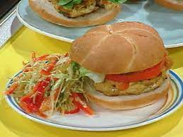

HOME
Curry Turkey Burgers Recipe

Description:
Looking for a beef burger that's a little different from the norm? Add curry powder and mango chutney to lean ground turkey burgers for a flavor boost. Ours is served on a sesame seed bun with leaf lettuce, Sriracha mayo, and a slice of onion on occasion..
Ingredients:
- 1 pound ground turkey
- ¼ cup mango chutney
- 2 tablespoons panko bread crumbs
- 1 tablespoon dried minced onion
- 1 tablespoon curry powder
- 1 teaspoon minced fresh ginger root
- 1 teaspoon garlic powder
- ½ teaspoon salt, or to taste
- Freshly ground black pepper to taste
Steps:
-
In a mixing bowl, combine the ground turkey, mango chutney, bread crumbs, dried onion, curry powder, ginger, garlic powder, and salt.
Quarter the mixture and shape into 1/2-inch thick patties.
-
Place patties in the freezer for 20 minutes to help them keep their shape and not fall apart on the grill.
-
Lightly oil the grill grate and prepare an outside grill for medium-high heat.
-
Cook turkey burgers on a prepared grill over direct heat for 4 to 5 minutes per side, or until no longer pink in the center and juices run clear.
At least 165 degrees F should be read on an instant-read thermometer put into the center (74 degrees C).
Serve right away.